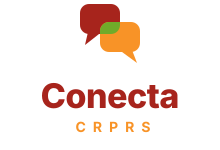

Conecta CRPRS — 3 propostas de logotipo
Paleta oficial: vinho #A7241C / #5E130E, laranja #F89327, verde #70AB2A.
A — Rede.
Núcleo central ligado a três pontos: os setores conectados.

B — Balões.
Demanda e resposta se encontram; o cruzamento fica verde.
C — Monograma.
“C” aberto cujas pontas se conectam.